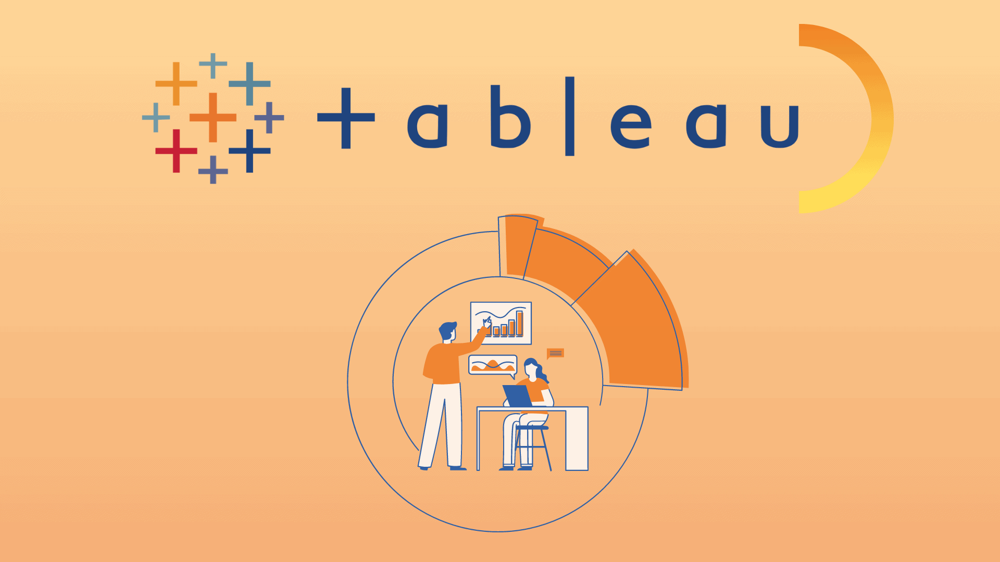
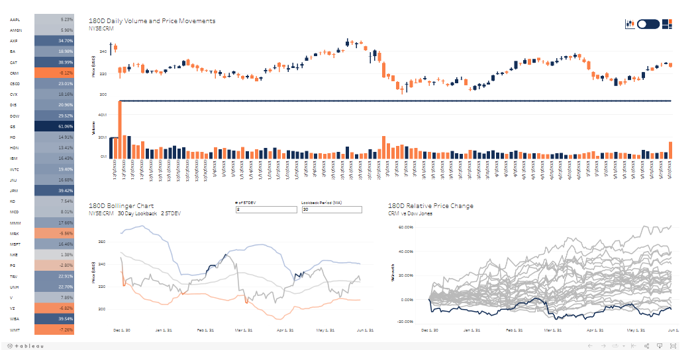
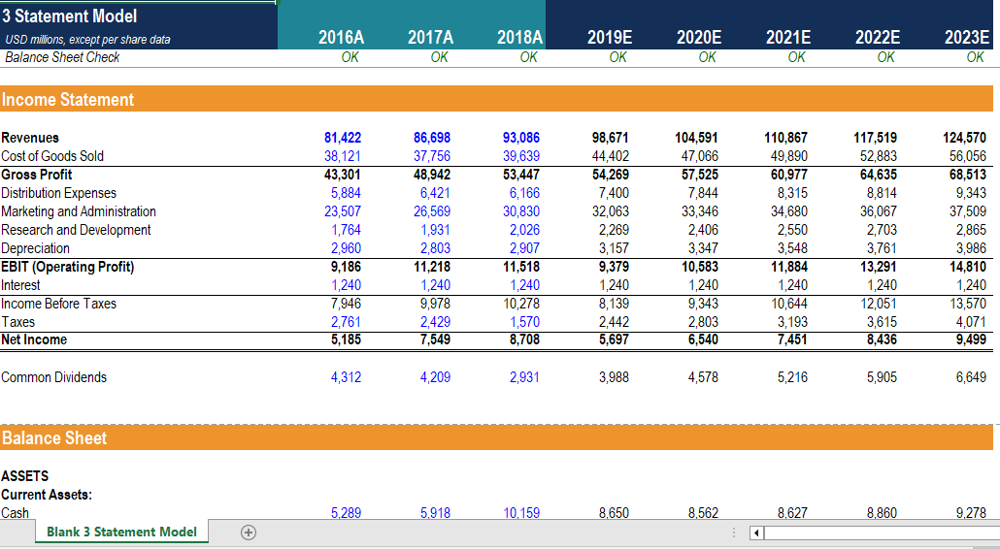
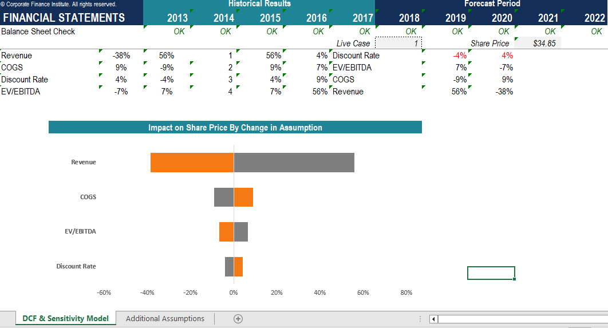
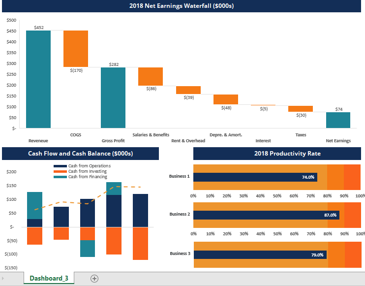

In this project, we automate transformations of
complex sales files to normalize data and create interactive dashboard
visuals that impress and convey a clear message. Additionally,
we slice our analysis by any time period by creating a
time data table. We also implemented geo-spacial and category attributes
to our data model, giving us endless slicing options. The usage of time-Intelligence
functions have also been implemented to compare sales and other data from different periods.

In this project, we import, transform and combine data from different
tables to create a Tableau dataset. Then we calculate different fields that
turn source data into meaningful metrics which are then implemented into
a variety of interactive visuals.

In this project, we retrieve and filter data from a
relational database using basic SQL syntax, transform the data and then write queries that combine
data from multiple tables which we in turn use in popular BI tools, and summarize the results of SQL
queries.


In this project, we create and import an SQL View into Power BI
and create a snowflake schema Data Model. We then create Create
staging DAX measures to populate the line items and body of the
Financial Statement. Finally, we create three Financial Statements
in Excel using Cube Formulas that reference the Data Model.

In this project, we create a Tableau Trading Dashboard for the Sales & Trading team.
The trading dashboard consists of Candlestick chart, Bollinger Band visual and other visuals that were requested by the team.

In this project, we perform financial forecasting analysis in Excel on a 3 Statement Financial Model which includes
Income Statement, Balance Sheet, and Cash Flow Statement. We are able to assess different scenario by
changing up the assunptions and drivers to see the impact on the bottom line of the business. We were also able
to visually interpret the Income and Cash Flow Statements.

In this project, we perform scenario and sensitivity analysis that aid in valuation analysis, business planning and model testing.
We are able to assess the impact on valuation as assumptions change and estimate cash flow and funding
requirements for business planning.
In this project, we are able to analyze the impact of the forecast on the companys
balance sheet and capitalization.

In this project, we harness the power of visual communication in Excel by applying the best design principles to tell the story we want to tell and build a persuasive presentation.